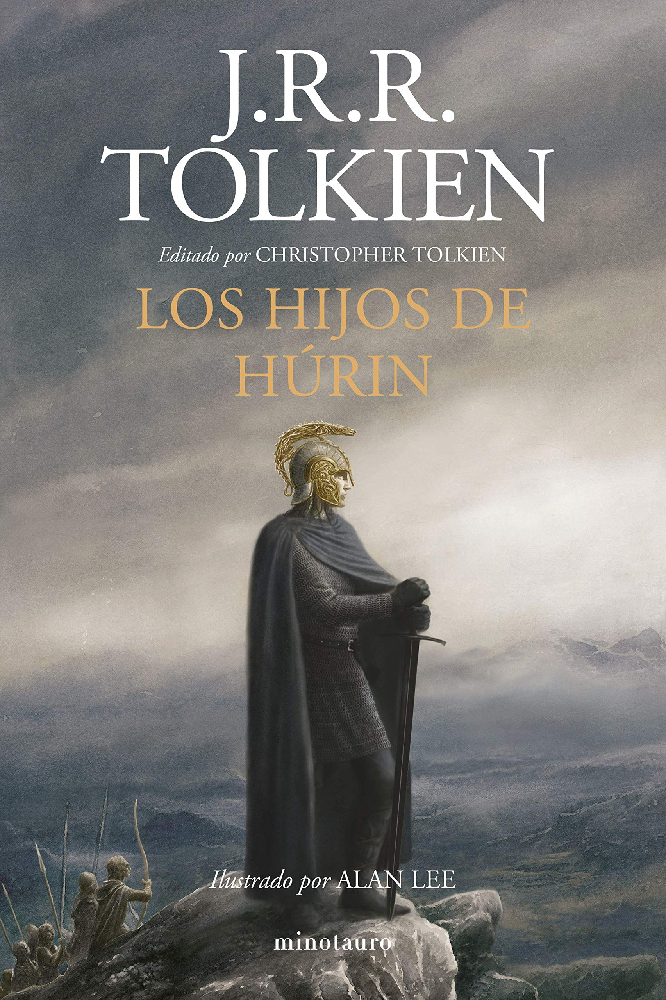

'Los hijos de Húrin' es uno de los grandes relatos que fundamentan la historia de la Tierra Media de J.R.R. Tolkien, y se sitúa en la Primera Edad, cuando Elfos, Hombresy Enanos
llevaban unos pocos siglos sobre la tierra. Junto con las historia de Beren y Lúthien, es la historia más mencionada en 'El Señor de los Anillos' y en 'El Silmarillion' como
referente del heroísmo y la tragedia en la lucha contra el Mal, en la Primera Edad encarnado en la figura de Morgoth.
La historia comienza en el año 458 de la Primera Edad del Sol, cuando los hermanos Húrin y Huor, huyendo de una tropa de orcos que les habían emboscado, llegaron a las Crissaegrim
y fueron llevados por dos águilas hasta el reino escondido de Gondolin. Allí, el rey Turgon les acogió de buen gusto y llegó a sentir gran afecto por ellos; no obstante, transcurrido
un año, los hermanos querían regresar a su casa y Turgon accedió a ello a pesar de que la ley impedía abandonar el reino a todo aquel que lo hubiera pisado o visto. Cinco años después
nació el hijo mayor de Húrin y de su esposa Morwen, Túrin, y dos más tarde su hija Urwen, quien murió a la edad de tres años debido a un viento maligno procedente de Angband que hizo
que enfermara. En el 472 P. E. tuvo lugar la Nírnaeth Arnoediad, en la que participó Húrin; dicha batalla acabó con la victoria de Morgoth y la captura de Húrin por parte del mismo.
Debido a que Húrin no quiso revelarle la posición de la ciudad secreta de Gondolin, Morgoth le maldijo junto a toda su descendencia.
Cuando llegó la noticia del cautiverio de Húrin a oídos del rey Thingol del bosque de Doriath y debido a que los Orientales estaban merodeando por Dor-lómin, el elfo ofreció su protección
a Túrin y a su madre; sin embargo, Morwen, debido a su orgullo, no quiso abandonar su hogar para protegerlo y envió a Túrin a Doriath acompañado por dos hombres. Allí, Túrin fue tomado
como hijo adoptivo de Thingol y Melian e hizo buena amistad con el elfo Beleg, con quien años después combatiría en las fronteras del reino, defendiéndolas de los ataques de los orcos.
Si bien Túrin era querido por muchos, había un elfo de la corte de Thingol, llamado Saeros, que lo despreciaba por el buen trato que recibía del rey y solía humillarlo en público. Un día
Saeros insultó a la madre de Túrin y ambos acabaron batiéndose en duelo; Túrin desarmó al elfo y este, al huir de él, acabó cayendo al río Esgalduin y murió. Túrin, creyendo que no se le
haría un juicio justo, huyó de Doriath y se unió a una banda de proscritos con la que convivió hasta que Beleg le encontró. Su amigo le rogó que regresara a Doriath, pero Túrin se resistió
debido a su orgullo. Tras su separación y al cabo de unos días, la banda de proscritos se encontró con un enano llamado Mîm, quien les guio hasta la casa en la que vivía con sus dos hijos
(uno muerto, asesinado por el proscrito Androg, quien recibió una maldición de parte de Min diciendo que jamás podrá tomar un arco en su vida). Al cabo de un tiempo, Beleg vuelve a Túrin.
El odio de Mîm hacia Beleg fue en aumento según pasaba el tiempo, pues no se fiaba de los elfos y además curó a Andróg cuando volvió a usar un arco y fue herido por una flecha, impidiendo así
que se cumpliera la maldición que le había echado. Por otro lado, cada vez más hombres se unían a Túrin y esto acabó por revelar su posición a Morgoth, que fue enviando tropas a los alrededores
de Amon Rûdh, aunque por el momento no ordenó el ataque. solo Mîm se percató de que estaban siendo rodeados y su odio hacia Beleg, unido al secuestro de su hijo Ibun por parte de los orcos, le
llevó a traicionar a Túrin. Los orcos, guiados por el enano, asaltaron Amon Rûdh y mataron a todos los hombres, excepto a Túrin, quien fue apresado, y a Beleg, quien se libró de la muerte y fue
encadenado al haber hecho Mîm un trato para encargarse de él por su cuenta. No obstante, Andróg, herido de muerte, ahuyentó al enano antes de que matará a Beleg y tras quitarle sus ataduras murió.
Beleg partió entonces siguiendo el rastro de Túrin y sus captores y durante el viaje se topó con el elfo Gwindor, quien había sido apresado durante la Nírnaeth Arnoediad y había logrado escapar
de las minas en las que Morgoth había ordenado que trabajase. En ese instante, una gran tropa de orcos pasó a su lado y, escondidos, vieron como llevaban a Túrin encadenado de camino a Angband.
Tras perseguirles y aprovechando que los orcos acamparon para festejar su triunfo y dormir, Beleg y Gwindor liberaron a Túrin. Alejados del campamento y mientras Beleg cortaba las ataduras de
Túrin, su espada Anglachel se resbaló de sus manos e hirió al adán en el pie, despertándole lleno de ira y, creyendo que se trataba de uno de sus captores, le mató. A la mañana siguiente y
después de haberse pasado toda la noche mirando el cuerpo de su amigo, Túrin ayudó a Gwindor a enterrarle y tomó la espada Anglachel. Acto seguido, Gwindor le guio hasta el reino de Nargothrond.
Anglachel fue afilada de nuevo y Túrin fue admitido en el consejo del rey Orodreth gracias a su habilidad en la guerra; allí se ganaría el respeto de todos los elfos debido a sus estrategias de
batalla, excepto el de Gwindor, contrario a ellas por lo que había visto en Angband. Los elfos, guiados por los consejos de Túrin, se prepararon para una guerra más abierta y construyeron un gran
puente sobre el río Narog para salir de la ciudad. Mientras tanto, Morwen y su hija menor, Niënor, acudieron a Doriath en busca de Túrin y allí permanecieron un tiempo al saber que se había marchado.
Transcurridos cinco años, una pareja de mensajeros llegó a Nargothrond con un mensaje del señor de las Falas, Círdan, a quien se le había aparecido el vala Ulmo en persona para avisarle del peligro
inminente que corría el reino de Orodreth. No obstante y aunque al rey le perturbó la noticia, Túrin le instó a que no escuchara. Fue así como, en otoño de ese mismo año, Morgoth lanzó el ataque
que estaba planeando y su ejército, encabezado por el dragón Glaurung, saqueó Nargothrond y mató a Orodreth. Túrin, engañado por Glaurung, huyó y se dirigió a Dor-lómin en busca de su madre y su
hermana creyendo que el lugar estaba siendo atacado.
Fuente: Wikipedia